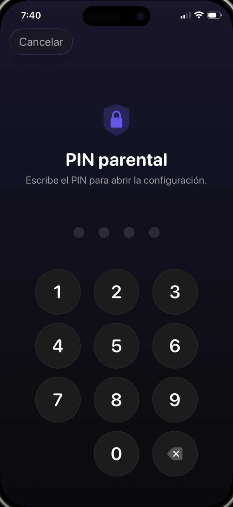

Primero la configuración, después las puertas, y después cómo cerrarlas.


La forma incorporada: Tiempo de uso de Apple
En el iPhone del chico, o desde tu propio dispositivo si el teléfono está en tu grupo de Compartir en familia:
- Abre Ajustes y toca Tiempo de uso.
- Toca Restricciones de contenido y privacidad y actívalas.
- Usa Límites de apps para topear categorías o apps individuales, y Tiempo de inactividad para las horas en que solo funciona lo que permitas.
- Pon un código de Tiempo de uso distinto del código de desbloqueo del teléfono, y que no sea una fecha de nacimiento.
- Dentro de Restricciones de contenido y privacidad, bloquea los cambios al código y a los ajustes de la cuenta.
Los huecos que los chicos encuentran de verdad
Ninguno requiere conocimientos técnicos. Todos se comparten en el patio del colegio:
- Borrar y reinstalar. Un límite atado a una app concreta se esquiva quitándola y volviéndola a descargar, salvo que también restrinjas la instalación de apps.
- El navegador. Bloquear la app de TikTok o de YouTube no sirve de nada si Safari abre el mismo sitio. Bloquea la categoría o restringe también el contenido web.
- Cambiar la hora. Mover la fecha y la hora del dispositivo puede confundir a los límites, salvo que bloquees los ajustes de fecha y hora.
- Mirarte teclear. El código se aprende espiando por encima del hombro mucho más seguido que adivinándolo.
- «Pedir más tiempo». Si las aprobaciones están a un toque en tu teléfono, las vas a aprobar distraído, y el límite desapareció.
El problema de fondo de los límites de tiempo
Incluso una configuración perfectamente sellada tiene una falla de diseño: cuando el tiempo se acaba, no cambió nada salvo que tu hijo ahora está aburrido y enojado contigo. Bloquear crea un vacío. Lo que lo llena es una negociación o un rodeo.
Por eso la configuración más duradera no solo bloquea: pone algo del otro lado del bloqueo. Las apps no desaparecieron, están detrás de una tarea que vale la pena hacer.
Bloquear con un propósito
Guardian Reader usa por debajo el mismo sistema Tiempo de uso de Apple, así que el bloqueo se aplica a nivel del sistema operativo, no con una extensión del navegador ni un perfil que se borra de un toque. La diferencia está en qué lo desbloquea.
En vez de esperar a que venza un temporizador, tu hijo escanea las páginas de un libro de papel y las lee en voz alta, de corrido. La app verifica la lectura contra el texto escaneado y libera los minutos que fijaste. Cuando se acaban, las apps se bloquean solas.
Cómo configurarlo
- Instala Guardian Reader en el iPhone del chico y ábrela.
- Permite el acceso a Tiempo de uso cuando lo pida; es el permiso propio de Apple.
- Elige las apps o categorías a bloquear: juegos, YouTube, TikTok, redes sociales, o todas.
- Define las páginas por sesión y los minutos que se ganan.
- Crea un PIN parental. Es distinto del código del teléfono y de Face ID, porque la cara registrada en ese iPhone es la de tu hijo.
Por qué el PIN no es Face ID
Este detalle importa más de lo que parece. En el teléfono de un chico, la biometría es del chico, así que cualquier «bloqueo parental» que se abra con Face ID se abre para él. Guardian Reader usa a propósito un PIN que solo sabes tú, con bloqueo temporal después de varios intentos fallidos.
La lectura desbloquea la pantalla.
Gratis · Sin cuentas, sin rastreo
Descargar Guardian Reader para iPhone